![Picture 2.9 shows 4.863 in number line.
This number line shows from negative number 3 to positive number 7.
Divide the space between 4 and 5 equally into 10 parts.
Eighth section from 4 to the right or second section from 5 to the left is marked as the second section as 4.8.
4.86 is between 4.8 and 4.9.
Divide the distance into 10 equal parts.
Section 4.86isplaced sixth place right towards 4.8 or section 4.86 is marked as fourth place left of 4.9.
(v) 4.863 is between 4.86 and 4.87. Divide the inner part into 10 equal parts.4.863 is marked in the third place after 4.86 in the right side or seventh place after 4.7 in the left.](images/image-43.png)
“When I consider what people generally want in calculating, I found that it always is a number” - Al-Khwarizmi
Al-Khwarizmi (A D (CE) 780 - 850)
Al-Khwarizmi, a Persian scholar, is credited with identification of surds as something noticeable in mathematics. He referred to the irrational numbers as ‘inaudible’, which was later translated to the Latin word ‘surdus’ (meaning ‘deaf ’ or ‘mute’). In mathematics, a surd came to mean a root (radical) that cannot be expressed (spoken) as a rational number.
Learning Outcomes
Numbers, numbers, everywhere!
You have learnt about many types of numbers so far. Now is the time to extend the ideas further.
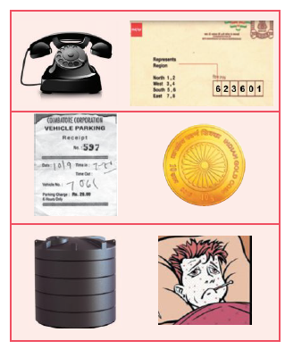
When you want to count the number of books in your cupboard, you start with 1, 2, 3, … and so on. Th ese counting numbers 1, 2, 3, … , are called Natural numbers. You know to show these numbers on a line (see Fig. 2.1).
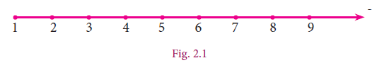
We use N to denote the set of all Natural numbers.
N = { 1, 2, 3, … } N equal to set bracket of 1,2,3,...
If the cupboard is empty (since no books are there). To denote such a situation, we use the symbol 0. Including zero as a digit you can now consider the numbers 0, 1, 2, 3, … and call them Whole numbers. With this additional entity, the number line will look as shown below
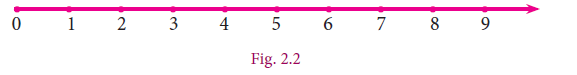
We use W to denote the set of all Whole numbers. W = { 0, 1, 2, 3, … } w is equal to set bracket of 0 1,2,3, infinityCertain conventions lead to more varieties of numbers. Let us agree that certain conventions may be thought of as “positive” denoted by a ‘+’ sign. A thing that is ‘up’ or ‘forward’ or ‘more’ or ‘increasing’ is positive; and anything that is ‘down’ or ‘backward’ or ‘less’ or ‘decreasing’ is “negative” denoted by a ‘–’ sign. You can treat natural numbers as
positive numbers and rename them as positive integers; thereby you have enabled the entry of negative integers –1, –2, –3, …. Minus 1 comma minus 2 comma minus 3 Note that –2 minus 2 is “more negative” than –1 minus 1. Therefore, among –1 and –2, you find that –2 minus 2 is smaller and –1 minus 1 is bigger. Are –2 minus 2 and –1minus 1 smaller or greater than –3? Minus 3 question mark Th ink about it. Th e number line at this stage may be given as follows:
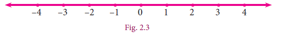
We use Z to denote the set of all Integers.
Z= { …, –3, –2, –1, 0, 1, 2, 3, … }.
Z equal to set bracket of minus 3, minus 2, minus 1, 0, 1, 2, 3,….
When you look at the figures Figure 2.2 and figure 2.3 above, you are sure to get amused by the gap between any pair of consecutive integers. Could there be some numbers in between?
You have come across fractions already. How will you mark the point that shows 21 on Z question mark It is just midway between 0 and 1. In the same way, you can plot , , , 2 3 1 41 51 43 ... etc. These are all fractions of the form ba where a and b are integers with one restriction that b ≠ 0. b is equal to 0 bracket open Why question mark bracket close If a fraction is in decimal form, even then the setting is same.
Because of the connection between fractions and ratios of lengths, we name them as Rational numbers. Here is a rough picture of the situation:
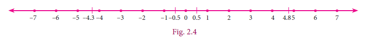
A rational number is a fraction indicating the quotient of two integers, excluding division by zero.
Since a fraction can have many equivalent fractions , there are many possible forms for the same rational number. Thus , 1by3 comma 2by 8 comma 8 by 24 all these denote the same rational number.
Consider a comma b where a > b a greater than b and their AM Arithmetic Mean a greater than b a plus b by 2 given by a +b/ 2. Is this AM a rational number question mark Let us see.
If a = p/q a is equal to p by q open bracket p, q integers and q≠ 0 q not equal to 0 close bracket; b = r/s b is equal to r by s open r, s integers and s≠ 0 snot equal to 0 close bracket comma, then ,
a+ b/2= p/q+r/s/ 2=ps+qr/2qs a plus b by 2 is equal to p by q plus r by s whole divided by 2 is equal to ps plus qr by 2qs
which is a rational number.
We have to show that this rational number lies between a and b.
a minus bracket of (a plus b/ 2) is equal to 2a minus a minus b / 2 is equal to a minus b//2 greater than 0 because a greater than b.
a-(a+b/2)=2a-a-b/2=a-b/2 which is > 0 since a>b.
a minus bracket of open bracket a plus b by 2 close bracket is equal to 2a minus a minus b /by 2 is equal to a minus b/ by2 greater than 0 because a greater than b.
Therefore, a>(a+b/2) ... ) a greater than open a plus b by 2 close bracket----- 1
(a+b/2)-b=a+b-2b/2=a-b/2 which is > 0 since a>b.
a plus b by 2 minus b is equal to a plus b minus 2b by 2 is equal to a minus b by 2 which is greater than 0 since a greater than b.
Therefore, (a+b/2)>b... (2) (a plus b by 2) greater than b
From (1) and (2) we see that a >(a+b/2)>b, a greater than open a plus b ன் by 2 close bracket greater than b, which can be visualized as follows:
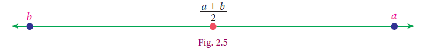
Thus, for any two rational numbers, their average/mid-point is rational. Proceeding similarly, we can generate infinitely many rational numbers.
Example 2.1
Find any two rational numbers between
½ and 2/3
1 by 2 and 2/3
Solution 1
A rational number between 1/2 and 2/3 = 1/2(1/2+2/3)=1/2(3+4/6)=1/2(7/6)=7/12
1/2 and 2/3 is equal to is equal to 1 by 2 bracket of 1 by 2 plus 2 by 3 is equal to 1 by 2 bracket of 3 plus 4 by 6 close bracket is equal to 1 by 2 bracket of 7 by 6 close bracket is equal to 7 by 12
A rational number between 1/2 and 7/12 = 1/2(1/2+7/12)=1/2(6+7/12)=1/2(13/12)=13/24
1/2 and 7/12 is equal to is equal to 1 by 2 bracket of 1 by 2 plus 7 by 12 close bracket is equal to 1 by 2 bracket of 6plus 7 whole divided by 12 close bracket is equal to 1 by 2 bracket of 13 by 12 is equal to 13 by 24
Hence two rational numbers between 1/2 and 2/3 are 7/12 and 13/24 (of course, there are many more!)
There is an interesting result that could help you to write instantly rational numbers between any two given rational numbers.
Result
If p/q and r/s are any two rational numbers such that p/q<r/s , p by q lesser than r by s then p+r/q+s p plus r by q plus s is a rational number, such that p/q < p+r/q+s < r/s p divided by q less than p plus r divided by q plus s less than r divide by s
Let us take the same example: Find any two rational numbers between 1/2 and 2/3
Solution 2
1/2 < 2/3 gives ½<1+ 2/2+ 3<2/3 or ½< 3/5<2/3 gives ½<1+ 3/2+ 5<3/5<2/3or ½< 4/7<3/5<5/8<2/3
1 by 2 less than 2 by 3 gives 1 by 2 less than 1 plus 2 divided by 2 plus 3 less than 2 by 3 or 1 by 2 less than 3 by 5 less than 2 by 3 gives 1 by 2 less than 1plus 3 divided by 2plus 5 less than 3 by 5 less than 2 by 3 or 1 by 2 less than 4 by 7 less than 3 by 5 less than 5 by 8 less than 2 by 3
Solution 3
Any more new methods to solve? Yes, if decimals are your favourites, then the above example can be given an alternate solution as follows:
1/2 = 0.5 and 2/3 = 0.66...
1 divided by 2 is equal to 0.5 and 2 divided by 3 is equal to 0.66 and so on.
1 divided by 2 and 2 divided by 3 – in between rational national. 0.51 comma 0.57 comma 0.58 and so on.
Hence rational numbers between 21 and 32 can be listed as 0.51, 0.57,0.58,…
Solution 4
There is one more way to solve some problems. For example, to find four rational numbers between 4/9 4 divided by 9 and 3/5 3 divided by 5, note that the LCM of 9 and 5 is 45; so, we can write 4/9 = 20/45 and 3/5 = 27/45. 4 divided by 9 is equal to 20 divided by 45 and 3 divided by 5 is equal to 27 divided by 45
Therefore, four rational numbers between 4/9 4 divided by 9 and 3/5 3 divided by 5 are 21/45,22/45,23/45,24/45,... 21 divided by 45, 22 divided by 45, 23 divided by 45, 24 divided by 45 and so on
Exercise 2.1
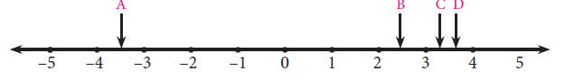
2. Find any three rational numbers between -7/11and 2/11.
3. Find any five rational numbers between Romen letter 1 ¼ and 1/5 Romen letter 2 0.1 and 0.11 Romen letter 3 –1 and –2
1 comma 1 by 4 1 by 5 2 comma 0.1 and 0.11 3 comma minus 1 and minus 2
ANSWERS
Exercise 2.1
1. D 2. - 6/ 11, -5/ 11, 4 /11,……. 1/11
3. (i) 9/40,19/80,39/160,79/ 320,159/640; The given answer is one of the answers. There can be many more answers
(ii) 0.101, 0.102, ... 0.109 The given answer is one of the answers. There can be many more answers
You know that each rational number is assigned to a point on the number line and learnt about the denseness property of the rational numbers. Does it mean that the line is entirely filled with the rational numbers and there are no more numbers on the number line? Let us explore.
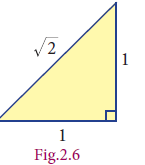
Consider an isosceles right-angled triangle whose base and height are each 1 unit long. Using Pythagoras theorem, the hypotenuse can be seen having a length √12+12=√2(see Fig. 2.6 ). square root of 1 power 2 plus 1 power 2 equal to square root of 2 figure two point six Greeks found that this is neither a whole number nor an ordinary fraction. The belief of relationship between points on the number line and all numbers was shattered! √2 was called an irrational number.
An irrational number is a number that cannot be expressed as an ordinary ratio of two integers
GOLDEN RATIO (1 ratio 1.6)
The Golden Ratio has been heralded as the most beautiful ratio in art and architecture.
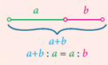
Take a line segment and divide it into two smaller segments such that the ratio of the whole line segment (a+b) bracket open a plus b to segment a is the same as the ratio of segment a to the segment b.
This gives the proportion a+b/a= a/b a plus b by a equal a by b
Notice that ‘a’ is the geometric mean of a+b and b. a plus b and b
Examples
1. Apart from √2 , square root of 2 comma one can produce a number of examples for such irrational numbers. Here are a few: √5, √7, 2√3 comma….. square root of 5, square root of 7, 2 square root of 3, and so on
2. π , the ratio of the circumference of a circle to the diameter of that same circle, is another example for an irrational number.
3. e, also known as Euler’s number, is another common irrational number.
4. The golden ratio, also known as golden mean, or golden section, is a number often stumbled upon when taking the ratios of distances in simple geometric figures such as the pentagon, the pentagram, decagon and dodecahedron, etc., it is an irrational number.
Where are the points on the number line that correspond to the irrational numbers question mark As an example, let us locate 2 on the number line. This is easy.
Remember that 2 is the length of the diagonal of the square whose side is 1 unit How question mark Simply construct a square and transfer the length of one of its diagonals to our number line. see Fig.2.).
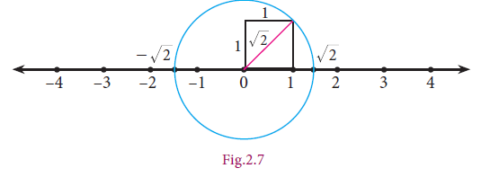
Squares on grid sheets can be used to produce irrational lengths.
Here are a few examples:
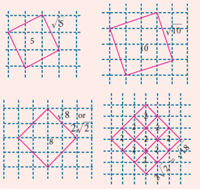
We draw a circle with centre at 0 on the number line, with a radius equal to that of diagonal of the square. This circle cuts the number line in two points, locating on the right of 0 and – minus on its left. Open bracket You wanted to locate; you have also got a bonus in minus bracket close
You started with Natural numbers and extended it to rational numbers and then irrational numbers. You may wonder if further extension on the number line waits for us. Fortunately, it stops and you can learn about it in higher classes.
Representation of a Rational number as terminating and non-terminating decimal helps us to understand irrational numbers. Let us see the decimal expansion of rational numbers.
If you have a rational number written as a fraction, you get the decimal representation by long division. Study the following examples where the remainder is always zero.
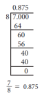
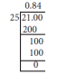
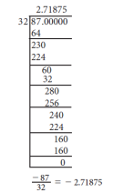
Note
These show that the process could lead to a decimal with finite number of decimal places. They are called terminating decimals.
Can the decimal representation of a rational number lead to forms of decimals that do not terminate? The following examples (with non-zero remainder) throw some light on this point.
Example 2.2
Represent the following as decimal form
Romen letter 1 minus 4 by 11
Romen letter 2 11 by 75
The reciprocals of Natural Numbers are Rational numbers. It is interesting to note their decimal forms. See the first ten. |
||
S.No. |
Reciprocal |
Decimal Representation |
1 |
1/1=0.1 1 by 1 is equal to 0.1 |
Terminating |
2 |
½=0.5 1 by 2 is equal to 0.5 |
Terminating |
3 |
1/3=0. 1 by 3 is equal to 0. 3 bar |
Non-terminating Recurring |
4 |
¼=0. 25 1 by 4 is equal to 0. 25 |
Terminating |
5 |
½=0. 5 1 by 4 equal to 0. 5 |
Terminating |
6 |
1/6=0. 1 1 by 6 is equal to bar 0. 1 |
Non-terminating Recurring |
7 |
1/7=0. 1 by 7 is equal to 0.142857 whole bar 0. |
Non-terminating Recurring |
8 |
1/8=0.125 1 by 8 is equal to 0.125 |
Terminating |
9 |
1/9=0. 1 by 9 is equal to 0.1 bar 0. |
Non-terminating Recurring |
10 |
1/10=0.1 1 by 10 is equal to 0.1 |
Terminating |
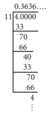
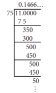
A rational number can be expressed by
Romen letter 1 either a terminating
Romen letter 2 or a non-terminating and recurring (repeating) decimal expansion.
The converse of this statement is also true.
That is, if the decimal expansion of a number is terminating or non-terminating and recurring, then the number is a rational number.
Note
In this case the decimal expansion does not terminate!
The remainders repeat again and again! We get non-terminating but recurring block of digits.
In the decimal expansion of the rational numbers, the number of repeating decimals is called the length of the period of decimals.
For example,
(i) 25/7=3.= has the length of the period of decimal = 6
(ii) 27/110=0. 2 = has the length of the period of decimal = 2
Romen letter 1 25 by 7 is equal to 3. 571428 whole bar
Equal has the length of the period of decimal is equal to 6
Romen letter 3 27 by 110 is equal to 0. 2 bar of 45
Equal has the length of the period of decimal is equal to 2
Example 2.3 Express the rational number in recurring decimal form by using 1/27 the recurring decimal expansion of. Hence write 31 in recurring decimal form. 59/27
Solution
We know that 1/3 = 0.
Therefore1/ 27= 1/9X1/3=1/9X 0.333…= 0.point037037=0.
Also, 59/27= 2=2+5/27
=2+(5X1/27)
=2+(5X0.)=2+(5X0.037037037…)=2+0.185185…=2.185185…=2.
1 by 3 is equal to 0. 3 bar 0.
1 by 27 is equal to 1 by 9 multiply 1 by 3 is equal to 1 by 9 multiply 0.333… is equal to 0.037037 is equal to 0.037 whole bar 0., 59 by 27 is equal to 2 2 multiply 5 by 27is equal to 2 plus 5 by 27
is equal to 2plus bracket open 5 multiply 1 by 27 bracket close
is equal to 2plus 5 multiply 0.point037 whole bar (5X0.) is equal to 2plus (5X0.037037037…) is equal to 2plus 0.point185185… is equal to 2.point185185… is equal to 2. 185 whole bar 2.
Let us now try to convert a terminating decimal, say 2.945 as rational number in the fraction form.
2.945 = 2 + 0.945
2.point945 = 2 +9/10 +4/100+5/1000
2. point 945 is equal to 2 plus 0.945
2. point 945 is equal to 2 plus 9 by 10 plus 4 by 100 plus 5 by 1000
= 2+ 900/1000+40/1000+5/1000 (making denominators common)
= 2 += 2945/1000 or 589/200 which is required
(In the above, is it possible to write directly 2.945 = 2945/1000 ?)
is equal to 2 plus 900 by 1000 plus 40 by 1000 plus 5 by 1000 making denominators common
is equal to 2 plus 945 by 1000 is equal to 2945 by 1000 or 589 by 200
In the above, is it possible to write directly 2.945 = 2945/1000 2.945 is equal to 2945 by 1000
Example 2.4 Convert the following decimal numbers in the form of p/q where p and q are integers and q≠0: (i) 0.35 (ii) 2.176 (iii) – 0.0028
Convert the following decimal numbers in the form of P by q where p and q are integers and q is not equal to 0: Romen letter 1 0.35 Romen letter 2 2.176 Romen letter 3 minus 0.0028
Solution
(i) 0.35 = 35/100 = 7/20
(ii) 2.176 = 2176/1000 = 272/125
–0.0028 = -28/10000 = -7/2500
Romen letter 1 0.35 is equal to 35 by 100 is equal to 7 by 20
Romen letter 2 2.176 is equal to 2176 by1000 is equal to 272 by 125
Romen letter 3 minus 0. point 0028 is equal to minus 28 by 10000 is equal to minus 7ன் கீழ் 2500
It was very easy to handle a terminating decimal. When we come across a decimal such as 2.4, we get rid of the decimal point, by just divide it by 10.
Thus 2.4 = 24/10 , which is simplified as 12/5 . But, when we have a decimal such as 2., the problem is that we have infinite number of 4s and hence will need infinite number of 0s in the denominator. For example,
2.4 = 2+
2.44 = 2 +
2.4 is equal to 2 plus 4 divided by 10
2.44 is equal to 2 plus 4 divided by 10 plus 4 divided by 100
How tough it is to have infinite 4’s and work with them. We need to get rid of the infinite sequence in some way. The good thing about the infinite sequence is that even if we pull away one , two or more 4 out of it, the sequence still remains infinite.
Let x = 2....(1)
Then, 10x = 24. ...(2)
Let x equal to 2. Bar 4 equation 1
10 x is equal to 24. Bar 4
[When you multiply by 10, the decimal moves one place to the right, but you still have infinite 4s left over).
Subtract the first equation from the second to get,
9x = 24. – 2.= 22
9 x is equal to 24.4 bar minus 2. 4 bar is equal to 22 (Infinite 4s subtract out the infinite 4s and the left out is
24 – 2 = 22)
x =22/ 9, the required value.
9x is equal to 22
24 – 2 is equal to 22
x is equal to 22 by 9, , the required value
We use the same exact logic to convert any number with a non-terminating repeating part into a fraction.
Example 2.5 Convert the following decimal numbers in the form of p/q(p,q∈Z and q≠0)
(i) 0. (ii) 2. (iii) 0. 4 (iv) 0.5
Solution
(i) Let x = 0.= 0.3333… (1)
(Here period of decimal is 1, multiply equation (1) by 10)
10 x = 3.3333... (2)
(2) – (1): 9 x = 3 or x = 1/3
(ii) Let x = 2.= 2.124124124… (1)
(Here period of decimal is 3, multiply equation (1) by 1000.)
1000 x = 2124.124124124… (2)
(2)–(1): 999 x = 2122 x = 2122/999
(iii) Let x = 0. 4= 0.45555… (1)
(Here the repeating decimal digit is 5, which is the second digit after the decimal point, multiply equation (1) by 10)
10 x = 4.5555… (2)
(Now period of decimal is 1, multiply equation (2) by 10)
100 x = 45.5555… (3)
(3) – (2): 90 x = 41 or x = 41/90
(iv) Let x = 0.5= 0.5686868… (1)
(Here the repeating decimal digit is 68, which is the second digit after the decimal point, so multiply equation (1) by 10)
10 x = 5.686868… (2)
(Now period of decimal is 2, multiply equation (2) by 100)
1000 x = 568.686868… (3)
(3) – (2): 990 x = 563 or x = 563/990.
Let x is equal to 0.3 bar is equal to 0.333333 equation 1
Here period of decimal is 1, multiply equation 1 by 10
10 x is equal to 3.3333.... equation 2
equation 2 minus equation (1) : 9x is equal to 3 or x is equal to 1 by 3
x is equal to 2.124 whole bar is equal to 2.124124124…… equation 1
(Here the repeating decimal digit is 68, which is the second digit after the decimal point, so multiply equation 1 by 1000
1000 x is equal to 2124.124124124 equation 2
equation 2 equation 1 ) : 999 x is equal to 2122 X is equal to 2122 by 999
x is Equal to 0.45 bar is Equal to 0.45555 equation 1.
Multiply 10 by equation 1
10 x is equal to 4.5555 equation 2 .
Now period of decimal is 1 comma multiply equation 1 by 100
100 x is equal to 45.5555 equation 3
equation 3 minus equation 2) 90x is equal to 41 மற்றும் x is equal to 41 ன் கீழ் 90
(iv) Let x is equal to 0.5 bar of 68 0.5 is equal to 0.5686868… சமன்பாடு (1)
Equation 1 multiply by 10
10 x is equal to 5.686868... equation 2
Now period of decimal is 2 comma multiply equation 2 by 100
1000 x is equal to 568.686868.. equation 3
equation 3 minus equation 2
990x is equal to 563 or x is equal to 563 by 990
Note
To determine whether the decimal form of a rational number will terminate or non - terminate, we can make use of the following rule
If a rational number , p/q, q ≠0 can be expressed in the form p/ 2m5n , where p∈ Z and , m,n∈ W, then rational number will have a terminating decimal expansion. Otherwise, the rational number will have a non- terminating and recurring decimal expansion
1=0. point 9999…..
7=6. point 9999…..
3.7=3. point 6999…..
1 equal to 0. point 9999
7 is equal to 6. point 9999
3.7 is equal to 3. point 699999
The pattern suggests that any terminating decimal can be represented as a non-terminating and recurring decimal expansion with an endless block of 9’s.
Example 2.6 Without actual division, classify the decimal expansion of the following numbers as terminating or non – terminating and recurring.
(i) 13/64 (ii) -71/125 (iii) 43/375 (iv) 31/400
1 comma 13 by 64 2 comma minus 71 by 125 3 comma 43 by 375 4 comma 31 by 400
Solution
(a)13/64 =13/26 , So 13/64 has a terminating decimal expansion.
(b) -71/125 =-71/53, So -71/125 has a terminating decimal expansion.
(c) 43/375 = 43/31X53, So 43/375 has a non – terminating recurring decimal expansion.
(d) 31/400= 31/24X 52, So 31/400 has a terminating decimal expansion.
a comma 13 by 64 is equal to 13 by 2 power 6, so comma,13 by 64 has a terminating decimal expansion.
b comma minus 71 by 125 is equal to minus 71 by 5 power 3, எனவே, minus 71ன் கீழ் 125 64 has a terminating decimal expansion. .
c comma 43 by 375 is equal to 43 by 3 power1 multiply 5 power 3, so, 43 by 375 has a non -terminating decimal expansion.
D comma 31 by 400 is equal to 31 by 2 power 4 multiply 5 power 2, so ,31 by 400 has a terminating decimal expansion.
Example 2.7 Verify that 1 = 0.
Solution
Let x = 0. = 0. point 99999… (1)
(Multiply equation (1) by 10)
10 x = 9. point 99999… (2)
Subtract (1) from (2)
9x = 9 or x =1
Thus, 0. = 1
1 is equal to 0 point bar 9
solution
x is equal to 0. bar 9 is equal to 0.99999 equation 1
Multiply equation 1 by 10
10 x is equal to 9.99999… equation 2
Subtract 1 from 2
9x is equal to 9 or x is equal to 1
0.bar 9 is equal to 1
Exercise 2.2
1. Express the following rational numbers into decimal and state the kind of decimal expansion
(i) 2/7 (ii)-5 (iii) 22/3 (iv) 327/200
Romen letter 1 2 by 7 Romen letter 2 minus 5 3 by 11 Romen letter 3 22 by 3 Romen letter 4 327 by 200
2. Express 1 by13 in decimal form. Find the length of the period of decimals.
3. Express the rational number 1 by 33 in recurring decimal form by using the recurring decimal expansion of 1 by11. Hence write 71by 33 in recurring decimal form.
4. Express the following decimal expression into rational numbers.
(i)0. (ii) 2. (iii) –5.132
(iv) 3.1 (v) 17.2 (vi) -21.213
Romen letter 1 0.bar 24 Romen letter 2 2.bar327 Romen letter 3 minus 5.132
Romen letter 4. 1 bar 7 Romen letter 5 17.2 bar of 15 Romen letter 6 minus 2.1213 bar of 7
5. Without actual division, find which of the following rational numbers have terminating decimal expansion.
(i) (ii) (iii) 4 (iv)
Romen letter 1 7 by 128
Romen letter 2 21 by 15
Romen letter 3 4 multiply 9 by 35
Romen letter 4 219 by 2200
Exercise 2.2 answers
1. (i) 0.2857142..., Non terminating and recurring (ii) -5., Non terminating and recurring
(iii) 7. Non terminating and recurring (iv) 1.635, Terminating
2. 0. point 076293, 6
3. 0. point 0303, 2.15
4. (i) 24/99 (ii) 2325/999 (iii) 1283/250 (iv) 143/45 (v) 5681/330
(vi)-190924/ 9000
5. (i) Terminating (ii) Terminating (iii) Non terminating (iv) Non terminating
It can be shown that irrational numbers, when expressed as decimal numbers, do not terminate, nor do they repeat. For example, the decimal representation of the number π starts with 3.14159265358979..., but no finite number of digits can represent π exactly, nor does it repeat.
Consider the following decimal expansions:
(iii) 12.230223300222333000…
(iv) √2 = 1.4142135624…
Romen letter 1 0 point 1 0 1 1 0 0 1 1 1 0 0 0 1 1 1 1 …
Romen letter 2 3 point 0 1 2 0 1 2 1 2 0 1 2 1 2 1 2 …
Romen letter 3 1 2 . point2 3 0 2 2 3 3 0 0 2 2 2 3 3 3 0 0 0 …
Romen letter 4 root 2 is equal to 1 . 4 1 4 2 1 3 5 6 2 4…
Are the above numbers terminating (or) recurring and non- terminating? No… They are neither terminating, nor nonterminating and recurring. Hence they are not rational numbers. They cannot be written in the form of p/q ,where p, q , ∈Z and q ≠0. They are irrational numbers.
A number having non- terminating and non- recurring decimal expansion is an irrational number.
Example 2.8 Find the decimal expansion of. √3 root 3
We often write root 2 equal 1.414, root 3 equal 1.732, pi equal 3.14 etc. These are only approximate values and not exact values. In the case of the irrational number π, we take frequently 22/7 (which gives the value 3.(142857) ̅) pi is equal to 3.141 to be its correct value but in reality these are only approximations. This is because, the decimal expansion of an irrational number is non-terminating and non-recurring. None of them gives an exact value!
Solution
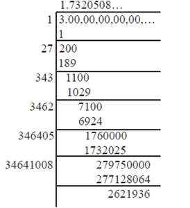
Thus, by division method, √3 = 1.7320508…
It is found that the square root of every positive non perfect square number is an irrational number. √2, √3, √5, √6, √7 , … root 2, root 3, root 5, root 6, root 7, …are all irrational numbers.
Example 2.9 Classify the numbers as rational or irrational:
Romen letter 1 root 10
Romen letter 2 root 49
Romen letter 3 0.025
Romen letter 4 0.7bar 6
Romen letter 5 2 . 5 0 5 5 0 0 5 5 5 ...
Romen letter 6 root 2 by 2
Solution
(i) √10 root 10 is an irrational number ( since 10 is not a perfect square number).
(ii) √49 = 7 = 7/1 , root 49 equal 7 equal 7 by 1 a rational number(since 49 is a perfect square number).
(iii) 0.025 is a rational number (since it is a terminating decimal).
(iv) 0. 7= 0.7666…. is a rational number ( since it is a non – terminating and recurring decimal expansion).
(v) 2.505500555…. is an irrational number ( since it is a non – terminating and non–recurring decimal).
(vi) √2/2 = √2 /√2X √2 =1/√2 root 2 by 2 is equal to root 2 by root 2 multiply root 2 is equal to 1 by root 2 is an irrational number ( since 2 is not a perfect square number).
Note
The above example(vi) it is not to be misunderstood as p/q form, because both p and q must be integers and not an irrational number.
Example 2.10 Find any 3 irrational numbers between 0.12 and 0.13.
Solution
Three irrational numbers between 0.12 and 0.13 are 0.12010010001…, 0.12040040004…, 0.12070070007…
Note
We state (without proof) an important result worth remembering.
If ‘a’ is a rational number and √b is an irrational number then each one of the following is an irrational number:
(i) a + √b ; (ii) a – √b ; (iii) a√b ; (iv) a/√b ; (v) √b/a.
Romen letter 1 a plus root b ; Romen letter 2 a minus root b ; Romen letter 3 aroot root b ; Romen letter 4 a by root b ; Romen letter 5 root b by a.
For example, when you consider the rational number 4 and the irrational number √5 , then 4 + √5 , 4 – √5 , 4√ 5 , 4/√5 , √5/4 ... 4 plus root 5, 4 –root 5, 4root 5, 4 by root 5, root 4 by 5 root 5 by 4. .. are all irrational numbers.
Example 2.11 Give any two rational numbers lying between 0.5151151115…. and 0.5353353335…
Solution Two rational numbers between the given two irrational numbers are 0.5152 and 0.5352
Example 2.12
Find whether x and y are rational or irrational in the following.
(i) a=2+√3, b=2-√3; x= a+ b,y= a- b
(ii) a=√2+7, b=√2-7; x= a+ b,y= a- b
(iii) a=√75, b=√3; x=ab,y=a/b
(i) a is equal to 2 plus root 3, b is equal to 2minus root 3; x is equal to a plus b,y is equal to a minus b
(ii) a is equal to root 2 plus 7, b is equal to root 2minus 7; x is equal to a plus b, y is equal to a minus b
(iii) a is equal to root 75, b is equal to root 3; x is equal to ab, y is equal to a is divided b
a is equal to root 18, b is equal to root 3; x is equal to ab,y is equal to a is divided by b
Note
From these examples, it is clear that the sum , difference, product, quotient of any two irrational numbers could be rational or irrational.
Solution
Romen letter 1 Given that a=2+√3, b=2-√3;
a is equal to 2 plus root 3, b is equal to 2minus root 3; x is equal to a plus b,y is equal to a minus b
x = a + b = (2 + √3 ) +(2 – √3 ) = 4 , a rational number.
y = a – b = (2 + √3 ) – (2– √3 ) = 2 √3 , an irrational number.
x is equal to a plus b is equal to bracket 2 plus root 3 plus in bracket 2 minus root root 3 is equal to 4, a rational number. .
y is equal to a –minus b is equal to bracket 2 plus root 3) minus bracket 2minus root root 3 is equal to 2 root 3, , an irrational number
romen letter 2Given that a = √2 +7 , b = √2 –7
x = a + b = ( √2 +7 ) +( √2 –7) = 2√ 2 , an irrational number.
y = a – b = ( √2 +7 )–( √2 –7) = 14 , a rational number.
a is equal to root 2 plus plus 7, b is equal to root root 2 –minus 7 given
x is equal to a plus b is equal to (root 2 plus 7) plus (root 2 –minus 7) is equal to 2 root2, an irrational number..
y is equal to a –minus b is equal to ( root 2 plus 7) minus ( root2 –minus 7) is equal to 14, a rational number.
Romen letter 3 Given that a = √75 , b = √3
x = ab = √75X √3=√75X3=√5X5X3X3=5X3=15, a rational number.
y = a/b= √75/√ 3=√ 75/3= √25= 5, rational number.
Romen letter 4 Given that a = √18 , b = √3
x = ab = √18X√3=√18X3= √6X 3X3X3=3√6 , an irrational number.
y = a/b= √18/√3=√ 6, an irrational number.
a is equal to root18, b is equal to root 3
x is equal to ab is equal to root 18 multiply root3 is equal to root 18X multiply 3 is equal to root square root of 6X multiply 3X multiply 3X multiply 3 is equal to 3root 6, rational number.
y is equal to a by b is equal to root 18 by root 3 is equal to root6, an irrational number
Example 2.13 Represent√9.3 square root of 9 point 3 on a number line.
Solution
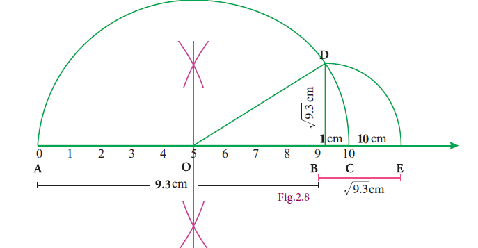
Exercise 2.3
1. Represent the following irrational numbers on the number line.
(i) √3 (ii) √4.7 (iii) √6.5
Romen letter 1 root 3
Romen letter 2 root 4.7
Romen letter 3 root 6.5
2. Find any two irrational numbers between
(i) 0.3010011000111…. and 0.3020020002…. (ii) 6/7 and 12/13 and (iii) √2 and√3
3. Find any two rational numbers between 2.2360679….. and 2.236505500….
Romen letter 1 0.3010011000111…. மற்றும் 0.3020020002….
Romen letter 2 6 by 7 and 12 by13
Romen letter 3 root 2 and root 3
3.2.2360679 and 2.236505500
Exercise 2.3 answers
2. (i) 0.301202200222..., 0.301303300333... (ii) 0.8616611666111 ..., 0.8717711777111 ... (iii) 1.515511555..., 1.616611666...
3. 2.2362, 2.2363
The real numbers consist of all the rational numbers and all the irrational numbers.
Real numbers can be thought of as points on an infinitely long number line called the real line, where the points corresponding to integers are equally spaced.
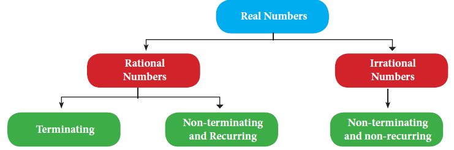
Any real number can be determined by a possibly infinite decimal representation, (as we have already seen decimal representation of the rational numbers and the irrational numbers).
Visualisation through Successive Magnification.
We can visualise the representation of numbers on the number line, as if we glimpse through a magnifying glass.
Example 2.14 Represent 4.point863 on the number line.
Solution
4.863 lies between 4 and 5(see Fiureg. 2.9)
(i) Divide the distance between 4 and 5 into 10 equal intervals.
(ii) Mark the point 4.8 which is second from the left of 5 and eighth from the right of 4
(iii) 4.86 lies between 4.8 and 4.9. Divide the distance into 10 equal intervals.
(iv) Mark the point 4.86 which is fourth from the left of 4.9 and sixth from the right of 4.8
(v) 4.863 lies between 4.86 and 4.87. Divide the distance into 10 equal intervals.
(vi) Mark point 4.863 which is seventh from the left of 4.87 and third from the right of 4.86.
Fig. 2.9
Example 2.15 Represent 3.on the number line upto 4 decimal places.
Solution
3.= 3.45454545…..
= 3.4545 ( correct to 4 decimal places).
The number lies between 3 and 4
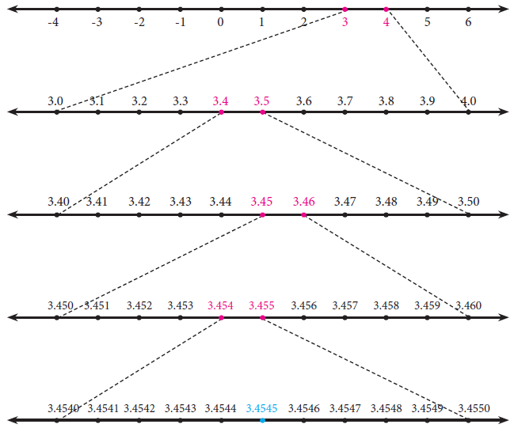
Fig. 2.10
Exercise 2.4
1. Represent the following numbers on the number line.
(i)5.348 (ii) 6.6 upto 3 decimal places. (iii) 4. 4upto 4 decimal places.
Note
It is worth spending some time on the concepts of the ‘square root’ and the ‘cube root’, for better understanding of surds.
Let n be a positive integer and r be a real number. If rn = x, then r is called the nth root of x and we write
= r
The symbol n√ (read as nth root) is called a radical; n is the index of the radical (hitherto we named it as exponent); and x is called the radicand.
What happens when n = 2? Then we get r 2 = x, so that r is , our good old friend, the square root of x. Thus is written as √16 , and when n =3, we get the cube root of x, namely . For example, 3 is cube root of 8, giving 2. (Is not 8 = 23?)
How many square roots are there for 4? Since (+2)×(+2) = 4 and also (–2)×(–2) = 4, we can say that both +2 and –2 are square roots of 4. But it is incorrect to write that √4=±2. This is because, when n is even, it is an accepted convention to reserve the symbol for the positive nth root and to denote the negative nth root by –. Therefore, we need to write √4=2 and -√4=2
When n is odd, for any value of x, there is exactly one real nth root. For example, and
Thinking corner
Which one of the following is false?
(1)The square root of 9 is 3 or –3.
(2)√9=3
(3) -√9=-3
(4) √9=±3
Consider again results of the form r =
In the adjacent notation, the index of the radical (namely n which is 3 here) tells you how many times the answer (that is 4) must be multiplied with itself to yield the radicand.
To express the powers and roots, there is one more way of representation. It involves the use of fractional indices.
We write x1/n.
With this notation, for example
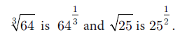
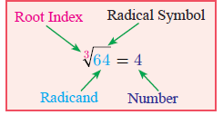
Observe in the following table just some representative patterns arising out of this new acquaintance: